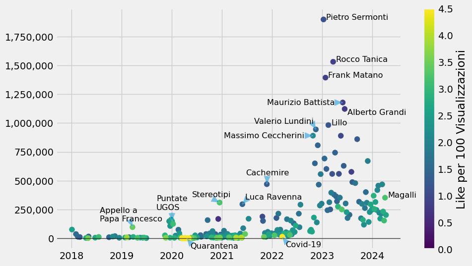
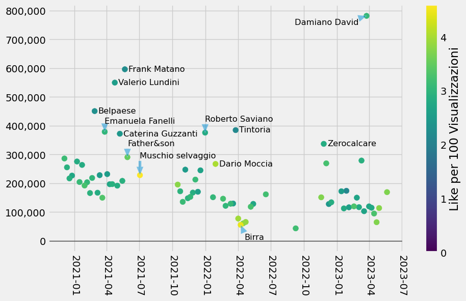

Quali sono le migliori puntate di Tintoria Podcast e Cachemire?
Scritto il da Timendum
Mi hanno consigliato e ho visto più volte citato sia Tintoria che Cachemire qui su r/italy e ho provato ad avvicinarmi, ma soprattutto Tintoria, che ha più di 200 puntate lunghe quasi sempre più di un’ora, mi è sembrato grosso da approcciare.
Quindi ho scaricato da Youtube alcune statistiche delle puntate e le ho rappresentate su un grafico.
Tintoria

Ogni pallino rappresenta una puntata, cioè un video su Youtube: più è a destra più è recente, più è in alto più visualizzazioni vengono riportate, più è giallo e più Like ha in rapporto con le visualizzazioni (giallo vuol dire più di 4 like ogni 100 visualizzazioni).
Si nota un boom incredibile a fine 2023, mi sembra a seguito dell’entrata del podcast nel circuito OnePodcast (di Radio Deejay); altre motivazioni non ne ho trovate.
Ho trovato fuori norma e quindi evidenzio:
- Appello a Papa Francesco, che ha visualizzazioni dieci volte tanto rispetto gli altri video dello stesso periodo.
- Discorso simile per le “Puntante UGOS” 1, 2, 3, 4, 5.
- Un rating incredibilmente alto per le puntante “In tempo di quarantena”, quasi tutte sopra i 4 Like per ogni 100 Views (ma hanno meno di 1,000 views tipicamente).
- Stereotipi sugli ITALIANI, che oltre alle Views ha anche un buon rapporto Like/Views
- Luca Ravenna è la seconda a superare le 250,000 visualizzazioni
- vs Cachemire Podcast è una puntata da record, la prima sopra le 450,000
- Altro record di like per Covid-19, 46 Like ogni 1000 Views, e siamo oltre le 10.000 visualizzazioni
- Poi ci sono tutte quelle TOP, in ordine:
- Infine segnalo Giancarlo Magalli, che ha molte views e un buon rapporto Like/Views
Cachemire
Stessa cosa anche per Cachemire Podcast, anche se ha molte meno puntante.

Qui come si vede le puntate sono quasi tutte in una fascia ben definita, tra le 300,000 e le 100,000 visualizzazioni.
Segnalo le più viste:
- Damiano David, la puntata più vista
- Frank Matano, ospite molto visto anche su questo podcast
- Valerio Lundini, seconda costante
- Tutto il Belpaese regione per regione, la puntata più vista senza ospite
- La puntata crossover, con Rapone e Tinti
- Emanuela Fanelli
- Roberto Saviano
- Caterina Guzzanti
- Zerocalcare
- Father&son, la puntata con i genitori di Ferrario e Ravenna
Inoltre, eccezionali per il rapporto Like/Views:
- Dario Moccia
- Il Tempo di Una Birra parte 2
- la puntata con Muschio selvaggio
Come ho fatto?
Per i più curiosi, trovate i dati analizzati e il codice usato per l’analisi su questo gist.